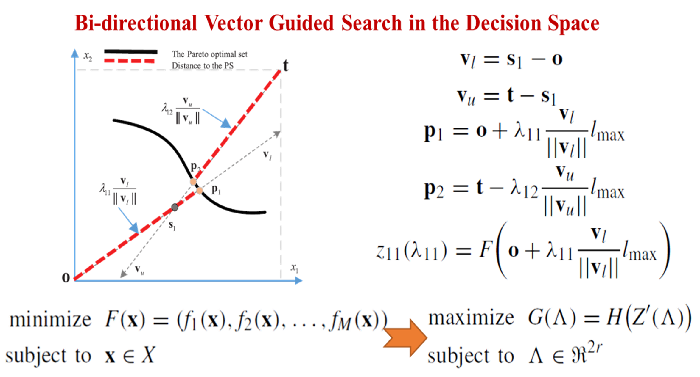
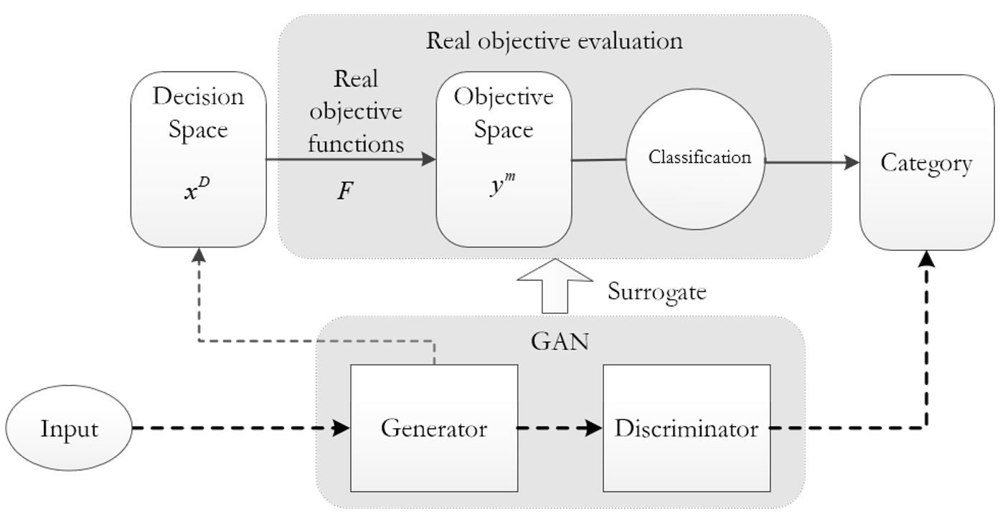
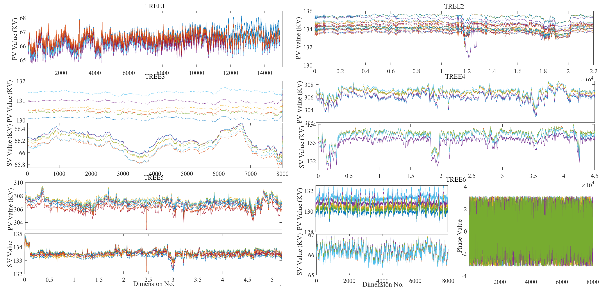
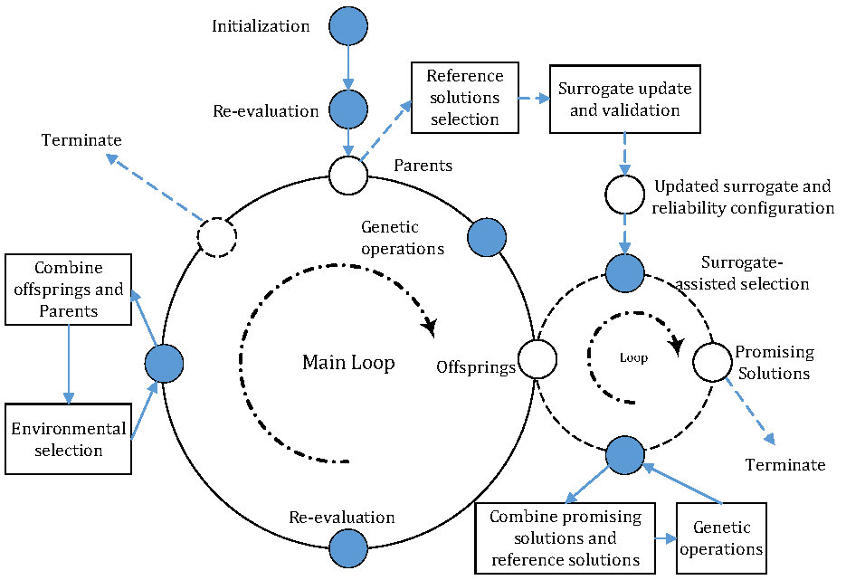

💼 Associate Professor, Associate Head of Department
🏫 Huazhong University of Science and Technology (HUST)
⚡ IEEE Senior Member | 📧 chenghehust [at] gmail.com
Dr. Cheng He is currently an Associate Professor with the School of Electrical and Electronic Engineering,
Huazhong University of Science and Technology, China.
🔍 Research Interests: Artificial/Computational Intelligence (including evolutionary multi-objective optimization,
model-based optimization, large-scale optimization, etc.).
🌐 Google Scholar / Github / LinkedIn
|

|
🚀 Accelerating Large-scale Multiobjective Optimization via Problem Reformulation
Cheng He, Lianghao Li, Ye Tian, Xingyi Zhang, Ran Cheng, Yaochu Jin, Xing Yao, IEEE Transactions on Evolutionary Computation, 2019 |
|

|
🚀 Evolutionary Multiobjective Optimization Driven by Generative Adversarial Networks (GANs)
Cheng He, Shuhua Huang, Ran Cheng, Tan Kay Chen Yaochu Jin, IEEE Transactions on Cybernetics, 2021 paper code poster ✨ Highlights: GMOEA focuses on efficient offspring generation via learning from the distribution of promising solutions. GMOEA is capable of handling MOPs with up to 200 decision variables effectively, which is a new research direction for model-based evolutionary computation. |
|

|
🚀 Evolutionary Large-Scale Multiobjective Optimization for Ratio Error Estimation of Voltage Transformers
Cheng He, Ran Cheng, Chuanji Zhang, Ye Tian, Qin Cheng Xin Yao, IEEE Transactions on Evolutionary Computation, 2020 paper code ✨ Highlights: TREE is a large-scale multiobjective optimization test suite extracted from the power delivery system, aiming at handling real-time ratio error estimation of voltage transformers. Generally, the maximum number of decision variables is up to half a million, and it includes constraints, which guide the design of a meaningful evolutionary algorithm. |
|

|
🚀 A Classification-Based Surrogate-Assisted Evolutionary Algorithm for Expensive Many-Objective Optimization
Linqiang Pan, Cheng He, Ye Tian, Handing Wang, Xingyi Zhang, Yaochu Jin. IEEE Transactions on Evolutionary Computation, 2018 code ✨ Highlights: CSEA is a classification-based surrogate-assisted evolutionary algorithm, which uses an uncertainty configuration to balance between convergence and uncertainty. As an early attempt to use the classification model for capturing the dominance relationship in a reduced fitness landscape, which lies the foundation for future research on expensive high-dimensional optimization. |
{kind=link}